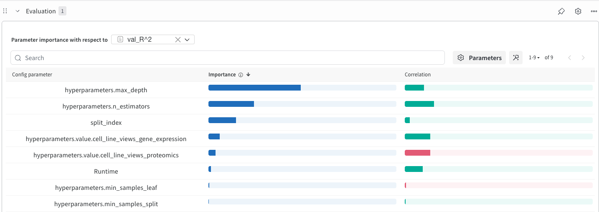
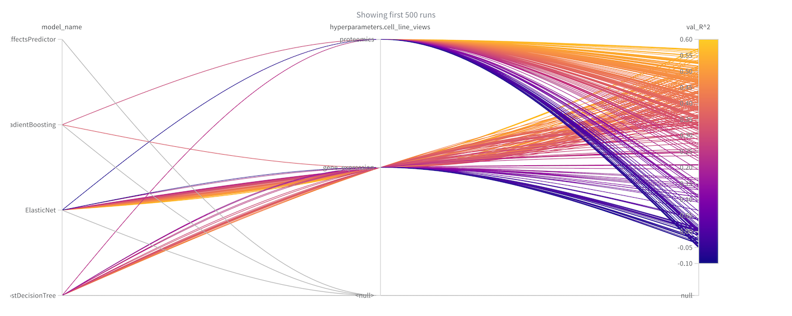
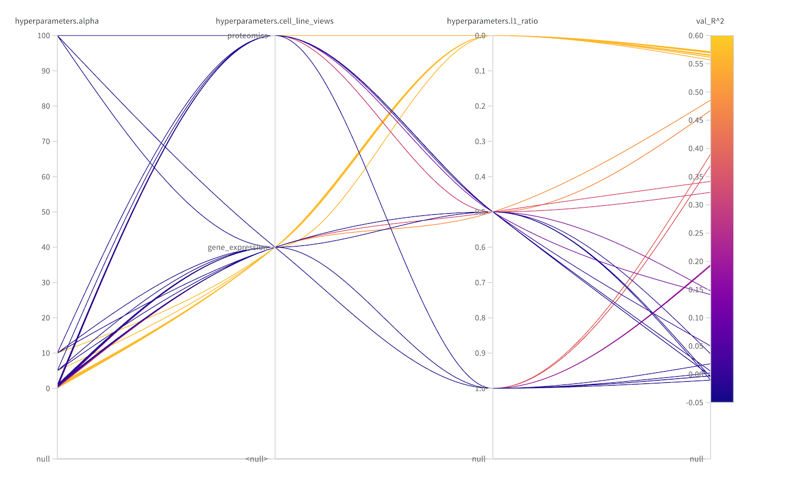

DrEvalPy and Weights & Biases
We have a weights and biases integration for all our models. You can use this functionality very easily
by just supplying an extra parameter --wandb_project:
drevalpy --run_id my_wandb_run --models model1 model2 --baselines baseline1 baseline2 --dataset CTRPv2 --wandb_project my_new_project_name
You will be asked to generate an API key in the console. After inputting it, your project is connected to your wandb account and you can look at your models online.
Example: Compare Flexible Inputs for DrEvalPy’s Baselines
Through the Flexible Input System, we now treat omic input as hyperparameter for our sklearn baselines. With wandb, we can compare model performances:
[All sklearn models]:
cell_line_views:
- gene_expression
- proteomics
drug_views:
- fingerprints
..
drevalpy --run_id compare_baselines \
--models RandomForest \
--baselines ElasticNet NaiveMeanEffectsPredictor GradientBoosting AdaBoostDecisionTree \
--dataset TOYv1 \
--wandb_project compare_baselines
With + Add Panels, you can add interesting visualization. Add Parameter Importance (with respect to
val_R^2) and select your hyperparameters of interest to be visible:
{kind=link}

Add a Parallel Coordinates Plot, too:
{kind=link}

By filtering, you can investigate in a more detailed manner: Here, we filter to split_index=4 and
model_name="Elastic Net" and extend the parallel coordinates plot.
{kind=link}
